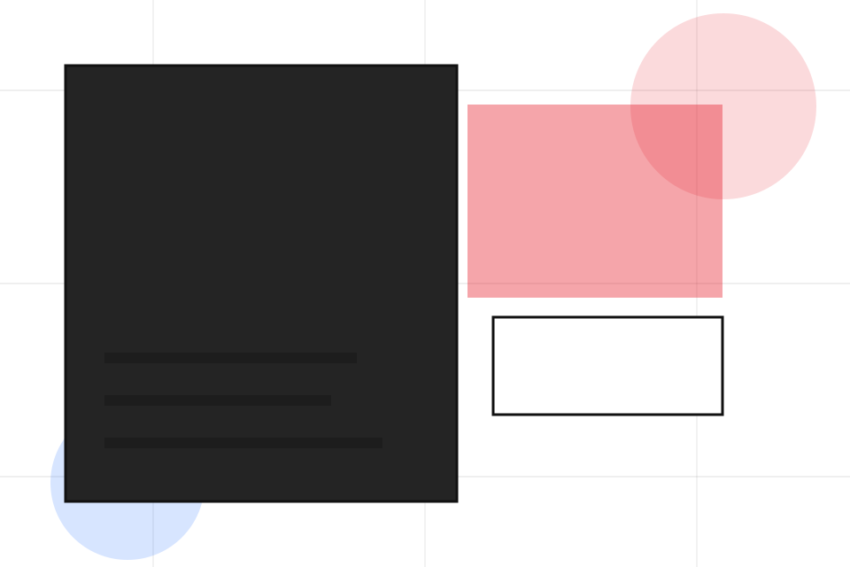
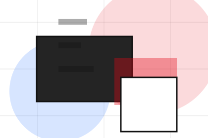
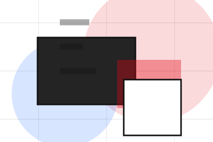
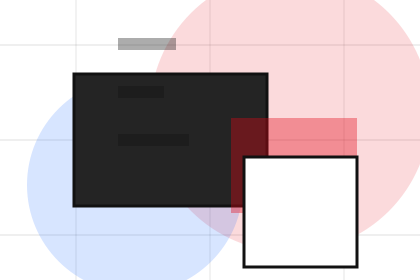
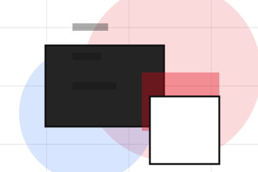
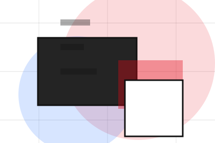
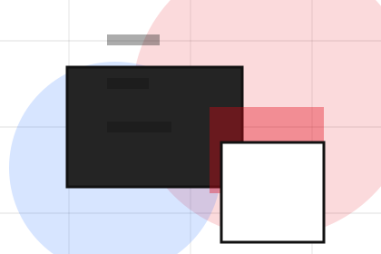
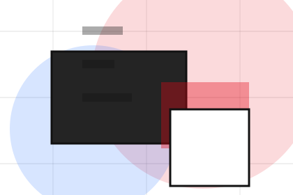
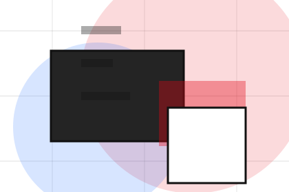
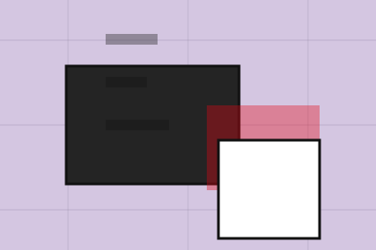

Start
How visitors begin this route and what detail is useful at the first step.
FAQ / 01
FAQ opens as a clear creative decision hub: what Studio offers, who it helps, why it matters, and which route to take first.
The first screen combines positioning, proof, primary action, and fast internal navigation, so people can act immediately or compare the rest of the faq route with context.
Typographic work hero
Select the closest route and Studio keeps the next step, proof, and follow-up expectation aligned with taste and production trust.

FAQ / 02
Revisions handles buying doubts directly so visitors can understand timing, fit, limits, and the safest next step.
Answers are short by design: enough to remove hesitation, not so much that the page turns into documentation before the visitor can act.
Explore FAQRevisions gives the page a specific angle instead of repeating the navigation label.
The identity project cards show what to compare, what to avoid, and what matters most for creative, design & visual production visitors.
The final cue points to a useful internal route so the section keeps the journey moving.
FAQ / 03
Files handles buying doubts directly so visitors can understand timing, fit, limits, and the safest next step.
Answers are short by design: enough to remove hesitation, not so much that the page turns into documentation before the visitor can act.
Explore FAQFiles gives the page a specific angle instead of repeating the navigation label.
The identity project cards show what to compare, what to avoid, and what matters most for creative, design & visual production visitors.
The final cue points to a useful internal route so the section keeps the journey moving.
FAQ / 04
Timelines explains the operating sequence so visitors can see how the first request becomes a clear recommendation and follow-up.
The steps are written from the visitor side: what they do first, what Studio clarifies, what they receive, and how support continues.
Explore FAQ

How visitors begin this route and what detail is useful at the first step.
FAQ / 05
Usage handles buying doubts directly so visitors can understand timing, fit, limits, and the safest next step.
Answers are short by design: enough to remove hesitation, not so much that the page turns into documentation before the visitor can act.
Explore FAQUsage gives the page a specific angle instead of repeating the navigation label.

The identity project cards show what to compare, what to avoid, and what matters most for creative, design & visual production visitors.

The final cue points to a useful internal route so the section keeps the journey moving.
FAQ / 06
Payments makes commercial comparison easier by showing fit, scope, and terms before creative visitors ask for the next step.
The layout keeps price-sensitive decisions honest: it separates starting scope, fuller delivery, and ongoing support so the visitor can ask a sharper question.
Explore FAQWho the offer is for, which scope it suits, and when a different route may be better.
What is included clearly enough for creative, design & visual production visitors to compare value without hidden jargon.

The practical details that should be confirmed before someone asks to start the project.
FAQ / 07
Ownership handles buying doubts directly so visitors can understand timing, fit, limits, and the safest next step.
Answers are short by design: enough to remove hesitation, not so much that the page turns into documentation before the visitor can act.
Explore FAQOwnership gives the page a specific angle instead of repeating the navigation label.
The identity project cards show what to compare, what to avoid, and what matters most for creative, design & visual production visitors.
The final cue points to a useful internal route so the section keeps the journey moving.
FAQ / 08
Delivery handles buying doubts directly so visitors can understand timing, fit, limits, and the safest next step.
Answers are short by design: enough to remove hesitation, not so much that the page turns into documentation before the visitor can act.
Explore FAQDelivery gives the page a specific angle instead of repeating the navigation label.
The identity project cards show what to compare, what to avoid, and what matters most for creative, design & visual production visitors.
The final cue points to a useful internal route so the section keeps the journey moving.
FAQ / 09
Support explains the practical scope, best-fit situations, and expected outcome so creative visitors can compare options without decoding jargon.
The section keeps the offer concrete: what is included, who it is best for, what decision it supports, and which linked route gives the deeper detail.
Open Contact
Who should use support and when it belongs in the faq journey.

The practical benefit visitors should expect after choosing this route.

Where to compare details, pricing, support, or contact options before committing.
FAQ / 10
Studio closes the faq route with a clear action, a quick reminder of the value, and a low-friction way to start the project.
Visitors who are ready can use the primary action. Visitors who are still comparing can scan the section links, proof, and support routes before they start the project.
Start ProjectThe final block keeps the choice simple: act now, compare one more proof route, or send enough detail for a focused response.
Start Projecttaste and production trust
A creative portfolio with identity-led project tiles, typographic scale, lightbox logic, and studio enquiry. FAQ ends with a direct path to start the project, plus enough context for visitors who still need to compare.

Start ProjectInformation is provided for planning and should be reviewed for the final client, location, and operating rules.